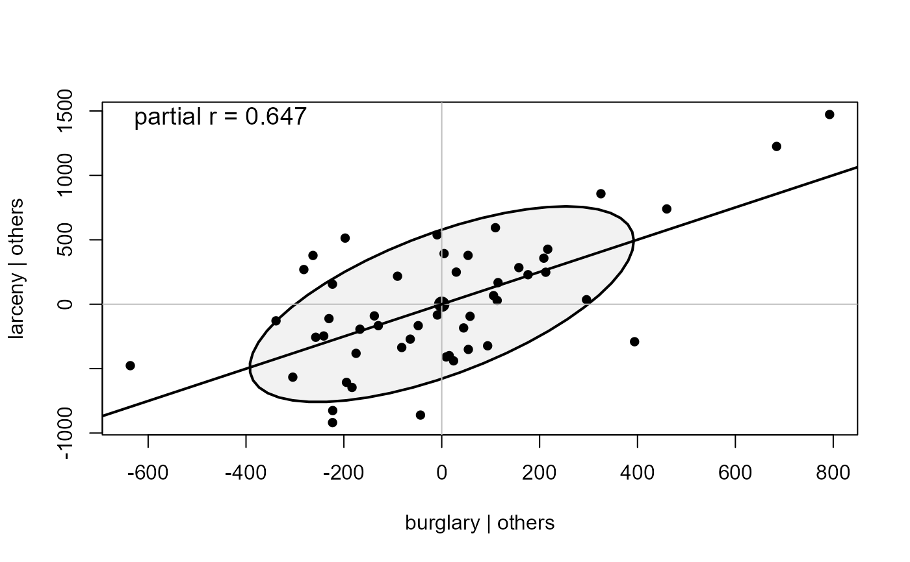
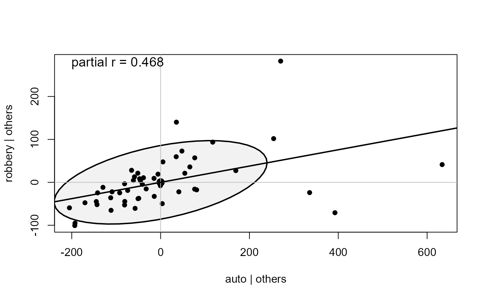
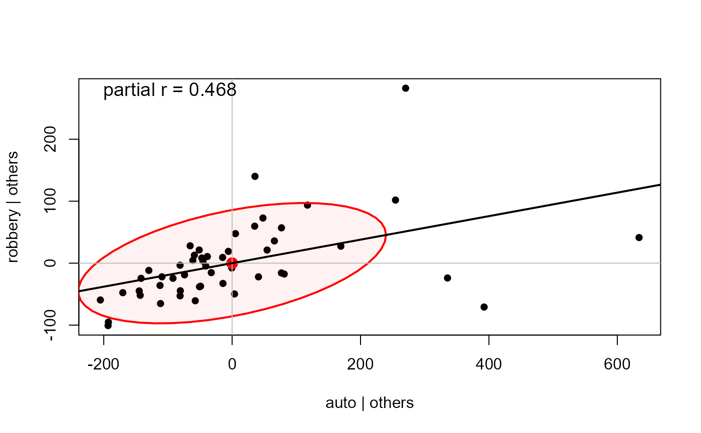
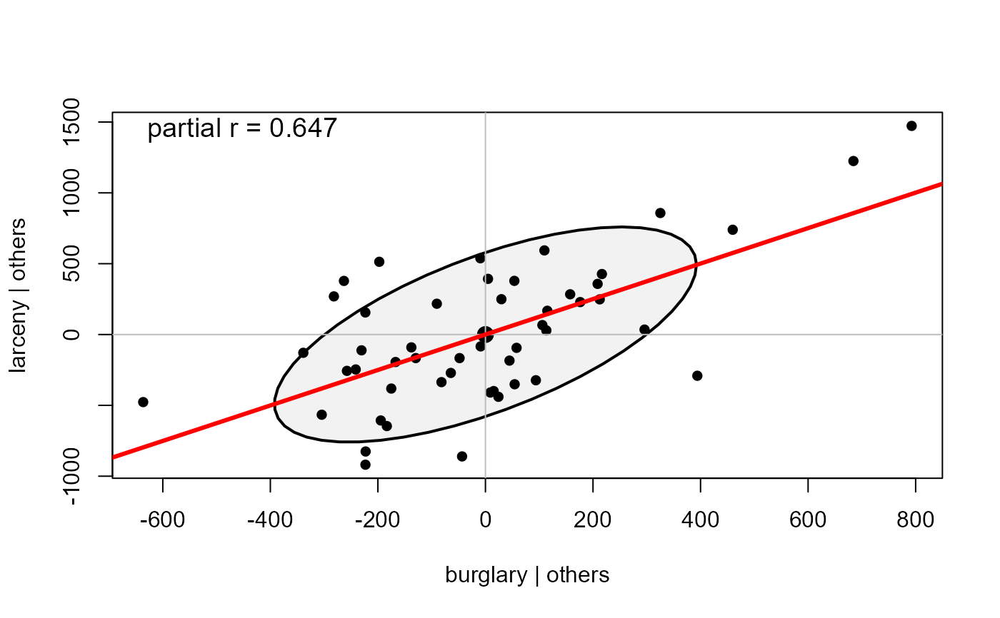
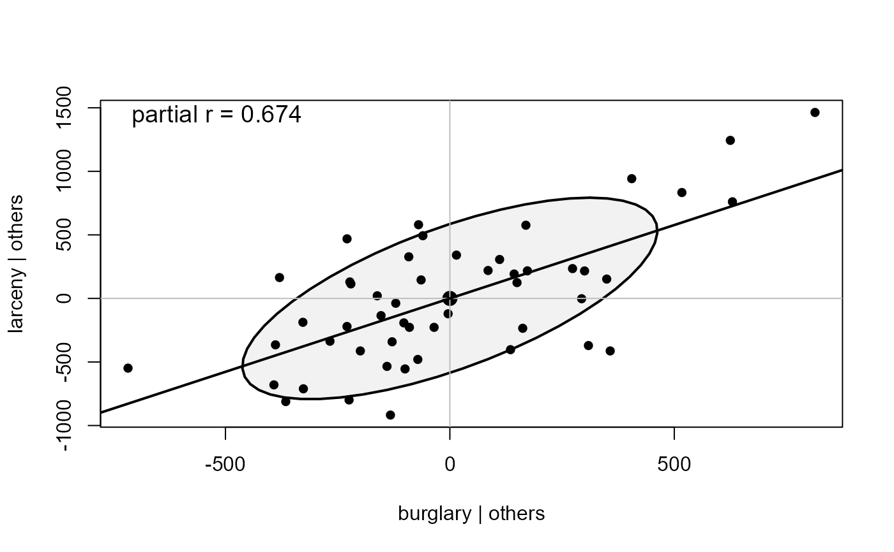
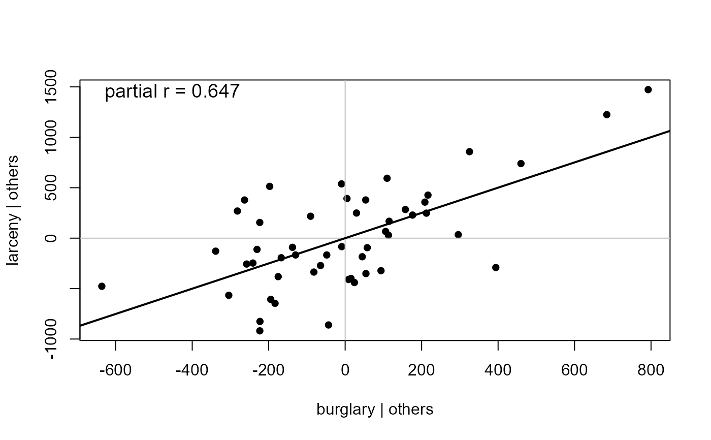
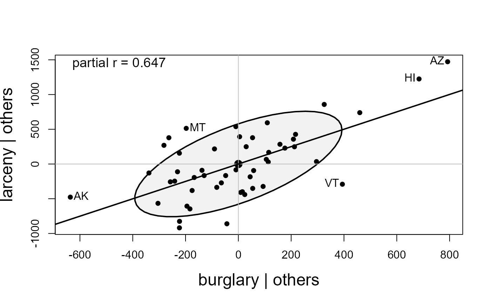

A partial variable plot is a visualization of a partial correlation of two variables in the context of other variables in a dataset. For two variables \(x_i\) and \(x_j\), it is simply an enhanced scatterplot of the partial residuals, \(e_i = (x_i - \hat{x}_i)\) from a regression of \(x_i\) on all other variables \(Z\) against those \(e_j = (x_j - \hat{x}_j)\) for another variable $x_j$. Consequently, it shows directly the net, conditional relation between \(x_i, x_j \vert \text{others}\) when all of the others in \(Z\) have been controlled/adjusted-for.
As implemented here, the basic scatterplot of these residuals can be enhanced by also showing the data ellipse of these residuals, the linear regression line, which reflects the partial correlation, and point labels to identify unusual data.
Usage
pvPlot(
X,
vars = 1:2,
others = NULL,
labels,
id = FALSE,
ellipse = TRUE,
ellipse.args = list(levels = 0.68, fill = TRUE, fill.alpha = 0.05, robust = FALSE, col
= "black"),
draw = TRUE,
col = "black",
pch = 16,
cex = par("cex"),
axes = TRUE,
regline = TRUE,
show.partial = list(loc = c(0.025, 0.95), cex = 1.2),
...
)Arguments
- X
a data.frame of numeric variables
- vars
either the character names of two variables in
Xor their indices- others
character names or indices of the variables to partial out. If
NULL(the default), all variables inXother thanvarsare used.- labels
id labels for the points. If not supplied, rownames of the dataset are used.
- id
controls point identification; if
FALSE(the default), no points are identified; can be a list of named arguments to theshowLabelsfunction- ellipse
logical; whether to draw the data ellipse
- ellipse.args
a list of arguments controlling the ellipse:
levels,fill,fill.alpha,robust, andcol(ellipse outline/fill color, independent of the pointcol). SeedataEllipsefor what these mean.- draw
logical; if
TRUEproduce graphical output; ifFALSE, only invisibly return coordinates of ellipse(s).- col
color used for points
- pch
the plotting character for points
- cex
Character expansion for points and labels
- axes
logical; if
TRUE(the default), grey axes lines are drawn at 0 on both coordinates- regline
controls the regression line.
FALSEsuppresses it;TRUE(default) draws it with default style; a list with named elementscoland/orlwddraws it with those attributes, e.g.regline = list(col="red", lwd=3).- show.partial
controls whether the partial correlation value is displayed in the plot. If
FALSEthe value is not shown. Otherwise, can be a list containing the location (loc) and character size (cex) of the label.- ...
other arguments passed to
dataEllipse
Details
Partial variable plots are intimately related to an added-variable plot,
such as produced by avPlots. However, that implementation
is designed for a linear model, rather than a data.frame.
The present version assumes that all variables passed are numeric.
This function uses dataEllipse for drawing, so further documentation of arguments passed there should be consulted.
Examples
data(crime, package = "ggbiplot")
crime.num <- crime |>
tibble::column_to_rownames("st") |>
dplyr::select(where(is.numeric))
pvPlot(crime.num, vars = c("burglary", "larceny"))

pvPlot(crime.num, vars = c("auto", "robbery"))

# ellipse color independent of point color
pvPlot(crime.num, vars = c("auto", "robbery"),
ellipse.args = list(col="red"))

# styled regression line
pvPlot(crime.num, vars = c("burglary", "larceny"),
regline = list(col = "red", lwd = 3))

# partial out only a subset of the other variables
pvPlot(crime.num, vars = c("burglary", "larceny"),
others = c("murder", "rape"))

# suppress the ellipse
pvPlot(crime.num, vars = c("burglary", "larceny"), ellipse=FALSE)

# label some observations
pvPlot(crime.num, vars = c("burglary", "larceny"),
id = list(n=5),
cex.lab = 1.5)
